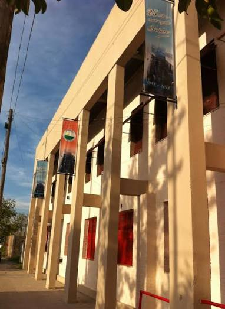

Secundario
Volver al CVTítulo obtenido
Bachiller en Ciencias Naturales.
Competencias adquiridas
- Análisis y resolución de problemas.
- Interpretación de información científica.
- Trabajo colaborativo en proyectos escolares.
- Comunicación oral y escrita.
- Organización y planificación de tareas.
Período de cursada
- Fecha de ingreso
- Fecha de finalización
Institución
Instituto de Educación Secundaria San Martín.
